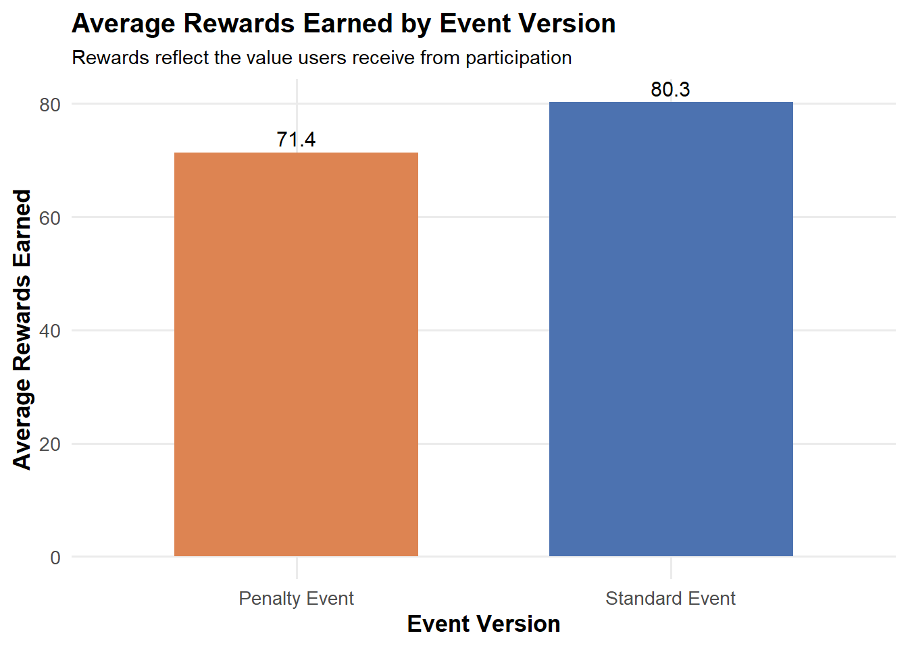

Portfolio 3: Gamelytics: Mobile Game Analytics Challenge 3
Goal: For the third portfolio, according to the challenge on Kaggle, the goal is to define and apply product metrics for evaluating a time-limited in-game event. In this event, players complete levels to earn rewards such as unique items, bonuses, or coins. I compare two possible event versions: a standard version, where players progress normally, and a penalty version, where players may be sent back after failed attempts. Because the original task did not provide an event-level dataset, I simulate a small user-level dataset to demonstrate how these metrics could be applied in a real product analytics setting.
Setup
Before evaluating whether an event is “successful,” it is important to define what success means. An event may be considered successful if users engage with it (e.g., complete levels, spend time), gain value (e.g., earn rewards), or experience minimal frustration.
To capture these dimensions, I group metrics into three categories:
- Engagement: levels attempted, levels completed, time spent
- Rewards: rewards earned, reward efficiency
- Friction: failed attempts, failure rate, retries per completed level
The penalty version is expected to increase engagement through repeated attempts, but may also reduce completion and rewards. This highlights a key tradeoff between challenge and user experience, which must be considered when evaluating event success.
Simulating event data
I will simulate 5,000 users and randomly assign each user to either the standard event or penalty event. I assume that users in the penalty version may attempt more levels because they are sent back and need to retry. I also simulate more failed attempts in the penalty version to reflect the increased difficulty.
library(tidyverse)## ── Attaching core tidyverse packages ──────────────────────── tidyverse 2.0.0 ──
## ✔ dplyr 1.2.0 ✔ readr 2.2.0
## ✔ forcats 1.0.1 ✔ stringr 1.6.0
## ✔ ggplot2 4.0.3 ✔ tibble 3.3.1
## ✔ lubridate 1.9.5 ✔ tidyr 1.3.2
## ✔ purrr 1.2.1
## ── Conflicts ────────────────────────────────────────── tidyverse_conflicts() ──
## ✖ dplyr::filter() masks stats::filter()
## ✖ dplyr::lag() masks stats::lag()
## ℹ Use the conflicted package (<http://conflicted.r-lib.org/>) to force all conflicts to become errorslibrary(scales)##
## Attaching package: 'scales'
##
## The following object is masked from 'package:purrr':
##
## discard
##
## The following object is masked from 'package:readr':
##
## col_factorset.seed(123)
n_users <- 5000
event_data <- tibble(
user_id = 1:n_users,
event_version = sample(
c("Standard Event", "Penalty Event"),
size = n_users,
replace = TRUE
),
levels_attempted = ifelse(
event_version == "Penalty Event",
rpois(n_users, lambda = 12),
rpois(n_users, lambda = 10)
),
failed_attempts = ifelse(
event_version == "Penalty Event",
rpois(n_users, lambda = 6),
rpois(n_users, lambda = 3)
)
)Event Outcome Variables
Now, let’s create outcome variables that reflect event performance.
levels_completed is based on the number of attempts minus
failures. I then calculate completion rate and failure rate for each
user.
I also simulate rewards and time spent, because a successful game event should not only be measured by completion. A user might spend a lot of time in the event, but if they earn few rewards or fail repeatedly, that may indicate frustration rather than positive engagement.
event_data <- event_data %>%
mutate(
levels_completed = pmax(levels_attempted - failed_attempts, 0),
completion_rate = ifelse(
levels_attempted > 0,
levels_completed / levels_attempted,
0
),
failure_rate = ifelse(
levels_attempted > 0,
failed_attempts / levels_attempted,
0
),
rewards_earned = levels_completed * runif(n_users, min = 8, max = 15),
time_spent_min = levels_attempted * runif(n_users, min = 2, max = 5),
reward_efficiency = rewards_earned / time_spent_min,
retries_per_completed_level = ifelse(
levels_completed > 0,
failed_attempts / levels_completed,
NA
),
completed_event = levels_completed >= 8
)Summary of KPIs by event version
event_summary <- event_data %>%
group_by(event_version) %>%
summarise(
users = n(),
avg_levels_attempted = mean(levels_attempted),
avg_levels_completed = mean(levels_completed),
avg_completion_rate = mean(completion_rate),
avg_failure_rate = mean(failure_rate),
avg_failed_attempts = mean(failed_attempts),
avg_retries_per_completed_level = mean(retries_per_completed_level, na.rm = TRUE),
avg_rewards_earned = mean(rewards_earned),
avg_time_spent = mean(time_spent_min),
avg_reward_efficiency = mean(reward_efficiency),
event_completion_rate = mean(completed_event),
.groups = "drop"
)
event_summary## # A tibble: 2 × 12
## event_version users avg_levels_attempted avg_levels_completed
## <chr> <int> <dbl> <dbl>
## 1 Penalty Event 2501 12.0 6.20
## 2 Standard Event 2499 9.97 7.00
## # ℹ 8 more variables: avg_completion_rate <dbl>, avg_failure_rate <dbl>,
## # avg_failed_attempts <dbl>, avg_retries_per_completed_level <dbl>,
## # avg_rewards_earned <dbl>, avg_time_spent <dbl>,
## # avg_reward_efficiency <dbl>, event_completion_rate <dbl>Let’s make a cleaner table for our report.
event_summary_clean <- event_summary %>%
mutate(across(where(is.numeric), ~ round(.x, 2)))
event_summary_clean## # A tibble: 2 × 12
## event_version users avg_levels_attempted avg_levels_completed
## <chr> <dbl> <dbl> <dbl>
## 1 Penalty Event 2501 12.0 6.2
## 2 Standard Event 2499 9.97 7
## # ℹ 8 more variables: avg_completion_rate <dbl>, avg_failure_rate <dbl>,
## # avg_failed_attempts <dbl>, avg_retries_per_completed_level <dbl>,
## # avg_rewards_earned <dbl>, avg_time_spent <dbl>,
## # avg_reward_efficiency <dbl>, event_completion_rate <dbl>Let’s start plotting!
Visualizing Event KPIs
Completion Rate
Now that we have summarized key performance metrics for each event version, I will begin by visualizing the average completion rate. This metric reflects how successfully users are able to progress through the event.
By comparing completion rates across the standard and penalty versions, we can assess whether the penalty mechanic makes the event more difficult and reduces user success.
my_theme <- theme_minimal(base_size = 13) +
theme(
plot.title = element_text(face = "bold", size = 15),
plot.subtitle = element_text(size = 11),
axis.title = element_text(face = "bold"),
legend.position = "none",
panel.grid.minor = element_blank()
)
ggplot(event_summary,
aes(x = event_version,
y = avg_completion_rate,
fill = event_version)) +
geom_col(width = 0.65) +
geom_text(
aes(label = scales::percent(avg_completion_rate, accuracy = 0.1)),
vjust = -0.4,
size = 4
) +
scale_y_continuous(labels = scales::percent_format(), limits = c(0, 1)) +
scale_fill_manual(values = c(
"Standard Event" = "#4C72B0",
"Penalty Event" = "#DD8452"
)) +
labs(
title = "Average Completion Rate by Event Version",
subtitle = "Penalty mechanics are associated with lower progress",
x = "Event Version",
y = "Average Completion Rate"
) +
my_theme
The standard event shows a higher average completion rate (66.7%) than the penalty event (47.5%). This suggests that the penalty mechanic makes the event more difficult and reduces users’ ability to successfully progress through levels.
Ok so, completion rate captures user success! But it does not explain why performance differs between versions. To better understand this, I will next examine failure rate and rewards earned to evaluate differences in difficulty and user outcomes.
Failure Rate
Let’s see whether the penalty version creates more friction for users.
ggplot(event_summary,
aes(x = event_version,
y = avg_failure_rate,
fill = event_version)) +
geom_col(width = 0.65) +
geom_text(
aes(label = scales::percent(avg_failure_rate, accuracy = 0.1)),
vjust = -0.4,
size = 4
) +
scale_y_continuous(labels = scales::percent_format(), limits = c(0, 1)) +
scale_fill_manual(values = c(
"Standard Event" = "#4C72B0",
"Penalty Event" = "#DD8452"
)) +
labs(
title = "Average Failure Rate by Event Version",
subtitle = "Penalty mechanics are expected to increase user friction",
x = "Event Version",
y = "Average Failure Rate"
) +
my_theme
The penalty event shows a substantially higher failure rate (55.2%) compared to the standard event (34.1%). This indicates that the penalty mechanic increases difficulty and introduces more friction, leading to more unsuccessful attempts.
Rewards Earned
Now, I compare average rewards earned to evaluate whether users receive similar value from each event version.
ggplot(event_summary,
aes(x = event_version,
y = avg_rewards_earned,
fill = event_version)) +
geom_col(width = 0.65) +
geom_text(
aes(label = round(avg_rewards_earned, 1)),
vjust = -0.4,
size = 4
) +
scale_fill_manual(values = c(
"Standard Event" = "#4C72B0",
"Penalty Event" = "#DD8452"
)) +
labs(
title = "Average Rewards Earned by Event Version",
subtitle = "Rewards reflect the value users receive from participation",
x = "Event Version",
y = "Average Rewards Earned"
) +
my_theme
Users in the standard event earn more rewards on average (80.3) than those in the penalty event (71.4). This suggests that the increased difficulty in the penalty version reduces users’ ability to successfully complete levels and obtain rewards.
Time Spent
Lastly, let’s visualize average time spent to see whether the penalty version increases engagement time.
ggplot(event_summary,
aes(x = event_version,
y = avg_time_spent,
fill = event_version)) +
geom_col(width = 0.65) +
geom_text(
aes(label = round(avg_time_spent, 1)),
vjust = -0.4,
size = 4
) +
scale_fill_manual(values = c(
"Standard Event" = "#4C72B0",
"Penalty Event" = "#DD8452"
)) +
labs(
title = "Average Time Spent by Event Version",
subtitle = "More time spent may indicate engagement, but also possible friction",
x = "Event Version",
y = "Average Time Spent (minutes)"
) +
my_theme
Users in the penalty event spend more time on average (42.5 minutes) compared to the standard event (34.7 minutes). While this may initially suggest higher engagement, it is likely driven by repeated failures rather than efficient progress, indicating increased friction rather than improved user experience.
Evaluate Event KPIs
Under the penalty variation, user behavior changes in predictable ways. The penalty mechanic increases the number of failed attempts and overall time spent, leading to higher engagement in terms of activity. However, it simultaneously reduces completion rates and rewards earned, indicating that users are less successful in progressing through the event.
This suggests that the penalty system introduces additional difficulty and friction, which shifts user behavior from efficient progression toward repeated attempts and retries.
To evaluate event success, key performance indicators (KPIs) should include completion rate, failure rate, rewards earned, and reward efficiency, as these capture both user success and the level of friction experienced during the event.
A successful event should balance engagement with user success and perceived fairness. A combination of completion rate, reward outcomes, and friction metrics should be used to ensure that users are both actively participating and successfully progressing.
Conclusion
From a product perspective, the standard event appears to provide a more balanced and positive user experience. Although the penalty version increases engagement metrics such as time spent, it does so at the cost of higher friction and lower user success.
Therefore, I would recommend prioritizing the standard event design or refining the penalty mechanic to reduce frustration while maintaining an appropriate level of challenge.